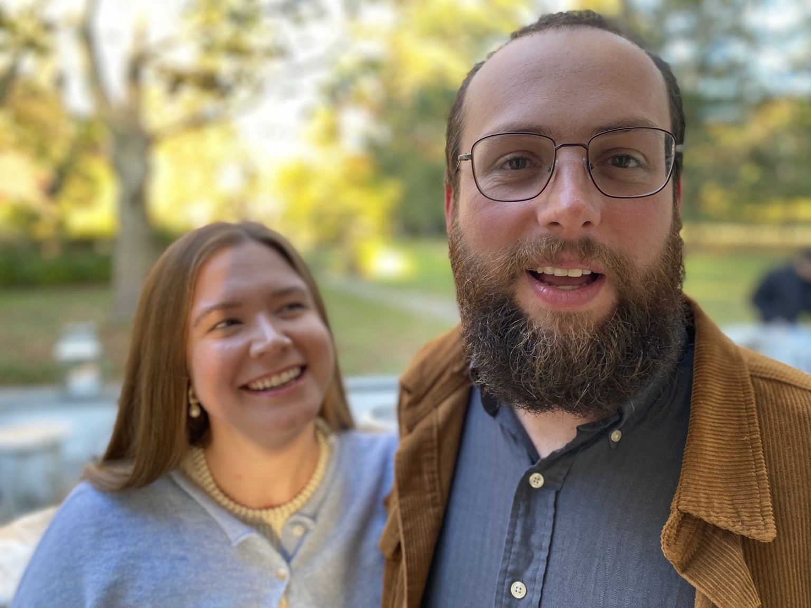

Welcome drinks
FRIDAY · JUNE 18
Hudson, NY7:00–9:00pm
Come say hello!
We hope you can join us for a weekend of good food, good company, and celebration near our home in the beautiful Catskills. We’re so excited to share this weekend with you!! All wedding guests are warmly invited to join us for welcome drinks on Friday and a pool party on Sunday, too!
FRIDAY · JUNE 18
Hudson, NY7:00–9:00pm
Come say hello!SATURDAY · JUNE 19
Philmont, NYCeremony at 5:30pm
Cocktail attireSUNDAY · JUNE 20
Athens, NY1:00pm until whenever
Lunch, snacks & swimmingOur wedding will be in Philmont, NY with additional events in nearby towns on Friday and Sunday. Hudson is the most centrally-located town to pick as your hub (about 15–20 minutes from the venue), and it has lots of great restaurants, shops and bars to enjoy while you’re here! If you’d rather venture a bit further out, there are lots of great little towns nearby and plenty of beautiful nature to enjoy.
We’ve pulled together a list of suggested Airbnbs and hotels in the area that will allow you to make the most of your weekend in the Catskills, no matter your vibe. Based on location, reviews and photos (and visits to most of the hotels), we think they’re safe bets.
Most of these hotels won’t open bookings for our wedding dates until closer to the date, so check back soon!
Includes a range of sizes and price points, all conveniently located in or near Hudson & Philmont for wedding festivities.
Modern & warm hotel rooms in a converted movie theater, with a great Mexican seafood restaurant attached.
Beautiful rooms & suites spread across three adjoining buildings. Many have features like clawfoot tubs and gas fireplaces. Also has a great restaurant onsite.
An old pocketbook factory, recently converted into modern, luxe hotel with a restaurant, bar and bath house.
Just across the river in the village where we live (about 30 minutes from the venue). Beautiful hotel from the late 1800s. Has a great restaurant & bar downstairs + an outdoor bar on the river right across the street. Only has a few rooms so it’ll book up quickly!
Also right across the river is Camptown, a beautiful property with 26 adorable cabins, 24 hotel rooms, an amazing Oaxacan restaurant and pool + pool bar.
The venue has limited parking, so we ask guests to carpool as much as possible and bring no more than one car per party. This will help ensure adequate parking space and reduce the number of people driving after drinking. The RSVP form will capture your driving plans so we can coordinate parking arrangements in advance.
Location details for the wedding and all events will be provided after you RSVP. The form will be live soon—we’ll keep you posted! In the meantime, please reach out if you need more information to make your travel plans.
Driving: The easiest way to get here is to drive. We’ll provide addresses once you RSVP and Google or Apple Maps will be able to get you around without issue.
Train: If you’re planning to travel by train, the venue is about a 20-minute drive from the Hudson Amtrak station, but you’ll need to make arrangements for transit from the station to your lodging, and travel around the area for the weekend.
Air: If you’re flying in (thank you!!!!), here are the closest airports:
The easiest way to get around the area while you’re here is to drive—there is no public transportation and Ubers & Lyfts can be few and far between. If you don’t have a vehicle or are flying in, we encourage you to consider renting a car, or coordinate with other attending guests who will be driving (let us know if we can help!).
The wedding will be held at a venue with beautiful outdoor and indoor spaces. We’re planning to have our ceremony and cocktail hour outside, with dinner under the tent on the deck and the reception to follow, primarily inside. If it rains, we have an indoor backup plan for the ceremony and cocktail hour, and can move dinner inside if needed. In any case, guests will have access to the indoor portions of the venue throughout the evening—to cool off in the AC, relax and use the restrooms.
We’re having a small wedding by design, to keep the vibe intimate and to ensure we have the chance to spend meaningful time with all of you. To help us make this possible, please do not bring uninvited guests. If you’d like to talk with us about bringing someone not listed on your invitation, please reach out to Emily or Henry directly.
We’ve invited the children of a few very close family members, but would like to keep this primarily an adult event. Use us as an excuse for a date night! However, if childcare is an issue and you need to be able to bring your children in order to attend, let either Emily or Henry know as early as possible and we’ll do our best to accommodate.
Cocktail attire is requested for the wedding on Saturday. Get dressed up with us and wear something you’re excited to dance, toast and be photographed in! Please don’t wear white. Friday’s welcome drinks are casual, and Sunday’s pool party is poolside casual—bring your swimsuit if you’d like to swim!
Having you celebrate with us is truly the best gift we could ask for! Because we are fortunate enough to have a fully stocked home and the generous support of our families, we do not have a wedding registry and do not expect any gifts.
If you wish to contribute, we would be deeply honored by a donation in our name to Black Mamas Matter. This Georgia-based alliance works to advance Black maternal health and justice through research, advocacy, community power and cultural change. We love their commitment to helping people build their families on their own terms. Donate to Black Mamas Matter ↗
If you really want to give us something directly, we also have a Honeymoon Fund set up. Visit our honeymoon fund ↗
We chose our venue with everyone's comfort in mind. It features a van-accessible parking space, direct yard access from the parking area, a wheelchair-accessible entrance ramp to the main floor, a ramp leading out to the deck, and a wheelchair-accessible restroom on the main floor. All wedding activities will take place on the accessible main floor. Please feel free to reach out to Emily or Henry if you have any specific accessibility questions or needs!
Passed appetizers will be available during cocktail hour and dinner will be served family style, with multiple entrees and sides available at every table. The main courses will be chicken and fish, with lots of vegetable sides. The food will all be gluten-free unless specifically noted. You do not need to make any decisions in advance—everything will be available to everyone. Please share any allergies or dietary restrictions when you RSVP.
Yes! There will be an open bar with signature cocktails & mocktails, standard cocktails, beer, wine and non-alcoholic options available. Cash tips for our bartenders are very welcome.
Everyone invited to the wedding is also invited to welcome drinks on Friday (7–9pm) and our pool party on Sunday (starting at 1pm, with no set end time). We’ll have lunch, snacks, beer, wine and soft drinks at the pool party. Bring your swimsuit if you’d like to swim!
After dinner, we’ll kick things off with dancing inside and hope to see you on the dance floor! When the time is right, we’ll transition to karaoke—a favorite activity of ours. First-timers are very welcome; it’s all about having fun, not sounding good! If karaoke isn’t your scene, no worries. We hope you’ll still stick around for chatting, lawn games and a fire outside, weather permitting.
If you’re looking for some fun things to do while you’re here, or are considering extending your visit, here are some of our favorite spots in the area. Let us know what you think if you check any out!
Governor’s Tavern ↗ - great local bar with lots of beers on tap and good bar food
Hudson Chatham Winery ↗ - winery with natural wines in a beautiful setting
Half Moon ↗ - dive bar with pizza and a spacious, shady side yard
Olana ↗ - Frederick Church’s home. There is a nice short hike up to the house (or you can drive). The grounds are free and cool to wander, and the interior house tours are great if that’s your kind of thing.
Stewart House ↗ - old hotel right in our town with a delicious restaurant and outdoor bar on the river
Catskill Mountain Bakery ↗ - our favorite bakery
Community Theatre ↗ - recently restored Vaudeville theatre that shows new releases and fun staff picks
Hi-way Drive-In ↗ - four-screen drive-in, owned by the same couple who runs the Community Theater
Left Bank ↗ - really delicious cider